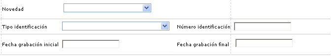
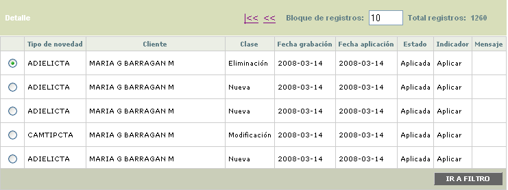

Administración de novedades débito |
Desde este formulario, se permite la aplicación de aquellas novedades que no pudieron ser aplicadas correctamente por errores durante el proceso, o de aquellas que de acuerdo con lo definido en la opción Novedades administrativas la entidad haya determinado que se aplican en batch y no en línea.
Al ingresar al formulario se despliega inicialmente
un filtro en el cual el usuario define los criterios de las novedades que
quiere seleccionar para aplicación.

Descripción de campos
Novedad |
En este campo tipo combo en el que se permite seleccionar la Novedad administrativa que se desea consultar. |
Tipo de identificación |
Campo tipo combo en el cual se puede seleccionar el tipo de documento de identificación asociado a los clientes para los cuales se desea consultar novedades. |
Número de identificación |
En este campo numérico de hasta 16 caracteres se ingresa el número de identificación del cliente para el cual se desea consultar novedades. |
Fecha grabación inicial |
Campo que permite ingresar en formato YYYY-MM-DD la fecha específica en la cual se grabaron las novedades que se desea consultar. |
Fecha grabación final |
Campo que permite ingresar en formato YYYY-MM-DD la fecha específica en la cual se grabaron las novedades que se desea consultar. |
Una vez que se han ingresado los criterios
a utilizar para seleccionar las novedades que se desea gestionar, mediante
el botón buscar el sistema efectúa la consulta y despliega un
formularaio con los resultados

Descripción de campos
Tipo novedad |
Despliega
la abreviatura asociada a cada tipo o clase de novedad, parametrizadas
mediante la opción Novedades
administrativas. |
Cliente |
En este campo se muestra el nombre del cliente a quien corresponde la novedad. |
Clase |
Campo
de salida en el que se indica si la novedad es Nueva es decir
que corresponde a la inclusión de información, una Modificación
o Eliminación de datos previamente existentes, brindando
un criterio adicional para su evaluación, en caso de ser necesario. |
Fecha de grabación |
En este campo se muestra en formato YYYY-MM-DD la fecha específica en la cual se grabó la novedad. |
Fecha de aplicación |
Campo que muestra en formato YYYY-MM-DD la fecha en que se aplicó exitosamente la novedad en el sistema. Difiere de la fecha de grabación para las novedades que presentan errores de datos, o para las que no son de aplicación en línea. |
Estado |
Muestra la opción Aplicada, asociada a la novedad, lo que permite diferenciar las novedades ingresadas al sistema. |
Indicador |
En este campo se muestra el indicador actual de la novedad y que siempre será Aplicada. |
Mensaje |
Si durante el proceso de aplicación de la novedad se presentó algún error que no permitió su correcta aplicación, en este campo se despliega el mensaje en el cual se indica al usuario la causa de tal evento. |
Detalle: Si el usuario selecciona un registro e invoca la opción Detalle se puede invocar el formulario a través del cual se capturó la novedad.